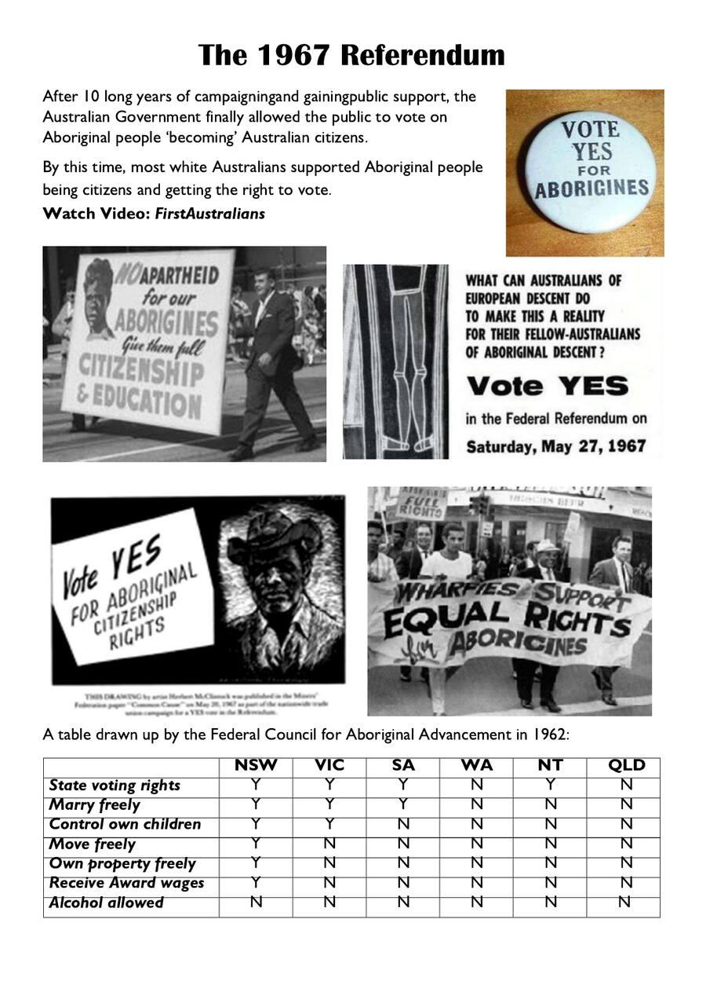
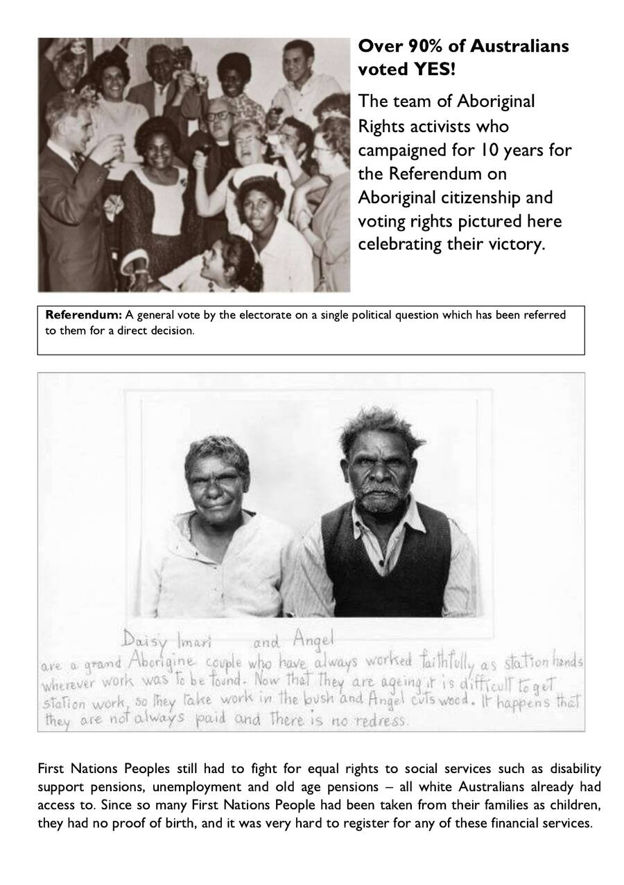
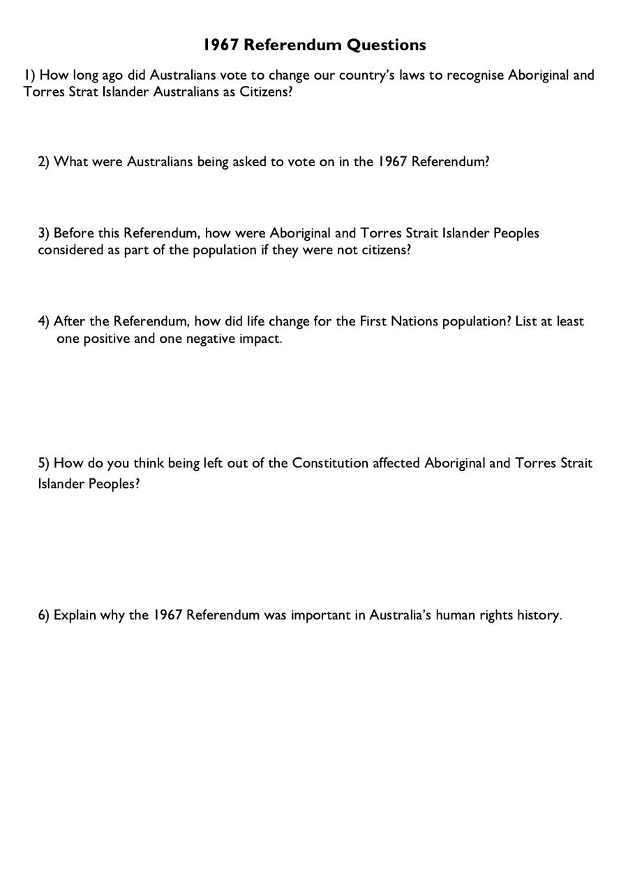
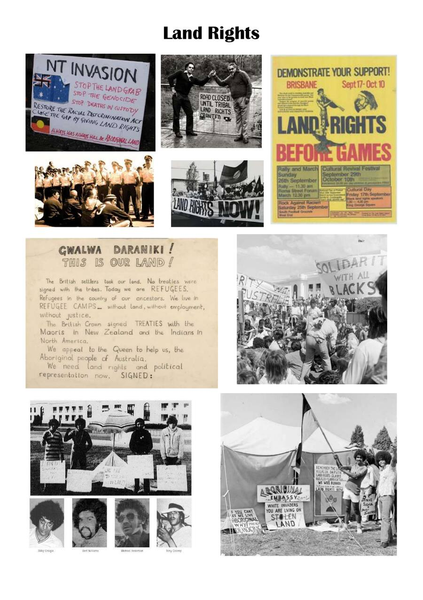
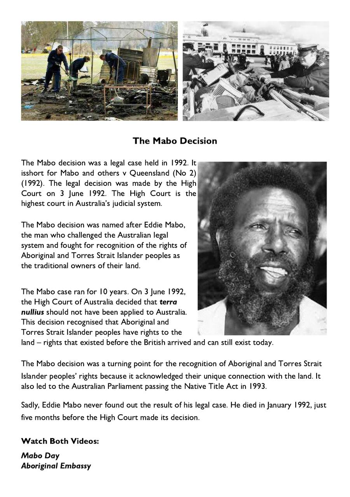
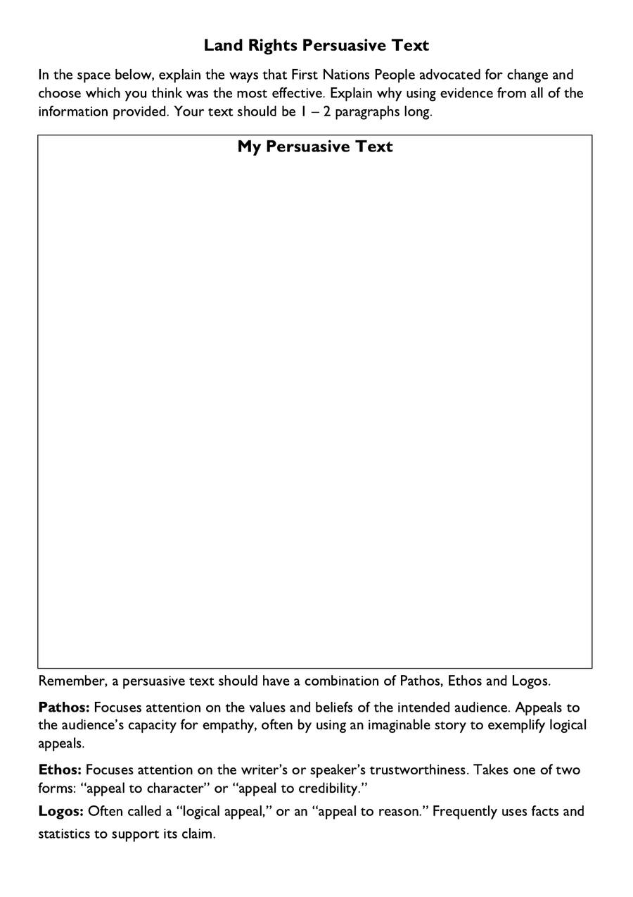

Imagine you were born in Australia and grew up here your whole life — but the government said you weren't a citizen. You weren't counted in the population. Laws about you were made without your voice. How would that feel?
🎯 Learning Intention
By the end of this lesson I can explain the significance of the 1967 Referendum, describe the fight for land rights including the Mabo decision, and write a persuasive text arguing for the most effective method of advocacy.
⚠️ Warning: This lesson contains historical images and film involving First Nations peoples, including images of deceased persons.
The 1967 Referendum


📹 Watch
First Australians — The 1967 Referendum

1967 Referendum Questions
1How long ago did Australians vote to recognise Aboriginal and Torres Strait Islander Australians as citizens?
2What were Australians being asked to vote on in the 1967 Referendum?
3Before this Referendum, how were Aboriginal and Torres Strait Islander Peoples considered as part of the population?
4After the Referendum, how did life change? List at least one positive and one negative impact.
5How do you think being left out of the Constitution affected Aboriginal and Torres Strait Islander Peoples?
6Explain why the 1967 Referendum was important in Australia's human rights history.
Land Rights

The Mabo Decision

📹 Watch
Mabo Day
📹 Watch
The Aboriginal Embassy
Land Rights Persuasive Text

Land Rights Persuasive Text
Explain the ways First Nations People advocated for change and choose which was most effective. Write 1–2 paragraphs using Pathos, Ethos and Logos.
🪞 Lesson Reflection
The 1967 Referendum achieved over 90% YES. Why do you think so many Australians supported this change?
Eddie Mabo fought for 10 years and died before learning the outcome. What does this tell us about commitment to justice?
Looking at the timeline — White Australia Policy → Stolen Generations → Freedom Rides → 1967 Referendum → Mabo — what pattern do you notice about how change happens?
Finished? Save your answers!
Click below to download your answers as a Word document and submit to your teacher.